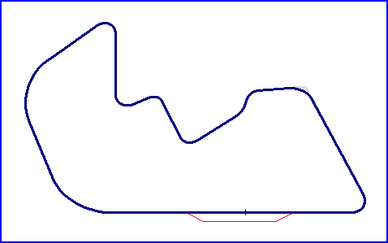

| Length | 3.000 Miles // 4.828 km |
| Direction | Clockwise |
Contact Information |
|
| Address |
5523 Birchdale Road Brainerd MN 56401 |
| Telephone | +1 (1)218 8247220 |
| Website | http://www.brainerdracewayandresort.com |
Brainerd International Raceway and Resort

| Length | 3.000 Miles // 4.828 km |
| Direction | Clockwise |
Contact Information |
|
| Address |
5523 Birchdale Road Brainerd MN 56401 |
| Telephone | +1 (1)218 8247220 |
| Website | http://www.brainerdracewayandresort.com |
Lasted Updated: 02 January 2004 21:50:13 GMT Standard Time